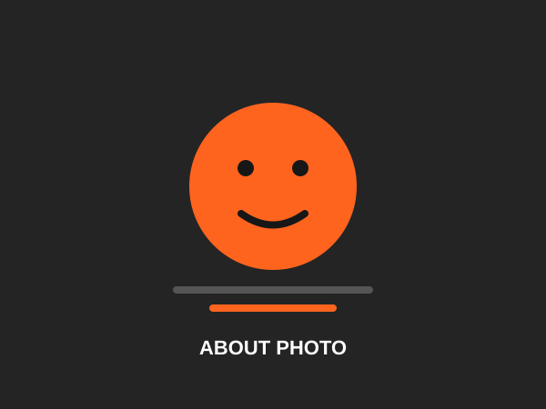
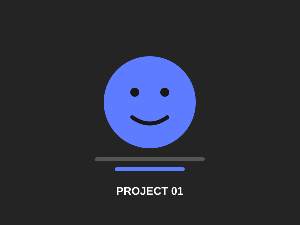
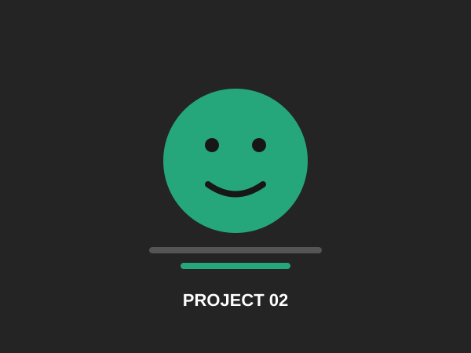
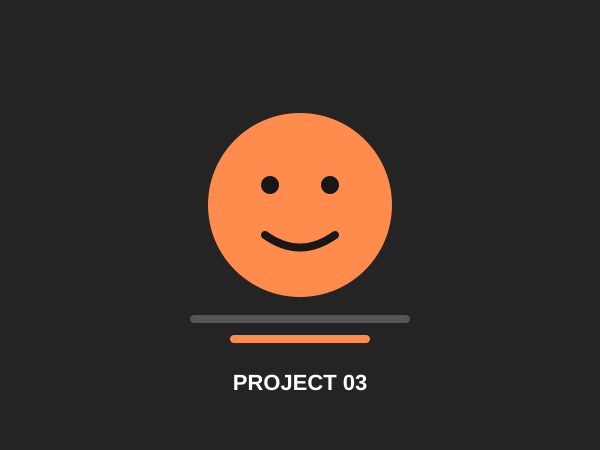

01
Web Design
Modern, responsive website designs focused on usability and visual clarity.
Hello, I'm
I am a motivated Junior Front-End Developer who has recently completed my studies in web development. I enjoy creating clean, responsive and user-friendly websites while continuously improving my skills and learning new technologies.
Hire MeWho I am

I am a Junior Front-End Developer who has recently completed my studies in web development. During my studies, I gained practical experience with HTML, CSS, JavaScript, responsive design, and Git/GitHub. I enjoy turning ideas and designs into clean, functional, and user-friendly websites. I am passionate about technology and continuously improving my development skills by working on personal projects and learning new tools. I’m motivated to start my professional career, gain real-world experience, work as part of a team, and grow into a confident and skilled Front-End Developer.
I am interested in creating modern and visually appealing websites that provide a good user experience. I enjoy solving problems, exploring new technologies, and improving my skills through practice and personal projects. My main career goal is to start working as a Front-End Developer and gain experience by working on real-world projects. I’m excited to learn from experienced developers, take on new challenges, and gradually grow into a skilled and confident professional.
What I offer
Modern, responsive website designs focused on usability and visual clarity.
Clean HTML, CSS and JavaScript implementation with responsive layouts.
User-centered interfaces, wireframes and polished visual experiences.
Content updates, small improvements and ongoing website support.
My work

A responsive mobile banking app designed to provide users with a simple and convenient way to manage their finances. The project focuses on clean UI, intuitive navigation, and a user-friendly experience across different screen sizes.

A modern and responsive landing page created with a focus on clean design, simple navigation, and an engaging user experience. The project helped me practice structuring web pages and creating layouts that work well on different screen sizes.

A responsive portfolio website designed to showcase my skills, projects, and experience as a junior front-end developer. I focused on creating a clean layout, easy navigation, and a responsive design that looks good on different devices.
What people say
Let's talk
Have a project or question? Send me a message and I'll get back to you.